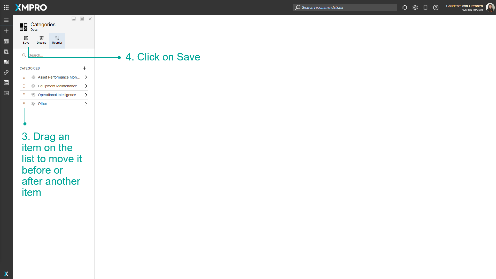

Manage Categories
A Category is a container that groups related Data Streams and Applications, which are shared between core XMPro Products to provide a homogenous environment.
Note
It is recommended that you read the article listed below to improve your understanding of Categories.
Adding a new Category
To create a new Category or use case group, follow the steps below:
- Open the Categories page from the left-hand menu.
- Click New.
- Specify a name and description for your new Category.
- Upload an icon by clicking on the plus-image and browsing to the correct file. Sample icons can be found in the Icon Library.
- Click Save.

Reordering Categories
The order of the categories that can be seen on the landing page can be changed using the Categories page. Please note that the order in which the categories appear on this page is the same as the order in which categories are displayed on the landing page. Follow the steps below to reorder the categories on the landing page:
- Open the Categories page from the left-hand menu.

2. Click Reorder.

3. Drag an item on the list to move it before or after another item.
4. When satisfied with the order of the categories, click on "Save".

Note
If you change your mind about reordering the categories, click Cancel. None of the changes you've made will be saved.
Removing Categories
Single Category
To remove a single category, follow the steps below:
- Open the Categories page from the left-hand menu.
- Select the category from the list.
- Click Delete.
- Confirm that you would like to delete the category.
Multiple Categories
To remove multiple categories at the same time, follow the steps below:
- Open the Categories page from the left-hand menu.
- Click Select.
3. Select the categories that you would like to remove.
4. Click Delete.

5. Confirm that you would like to delete the categories selected.

Last modified: May 29, 2025